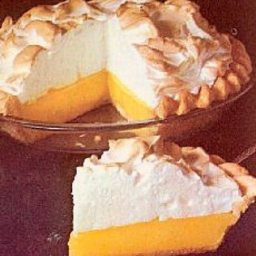

World's Healthiest Foods
Mama's HomeMade Lemon Meringue Pie

One 9-inch pie
30 Min - Prep Time
10 Min - Cook TIme
40 Min - Total
8 Servings
Ingredients
- 1 cup white sugar
- 2 tablespoons flour
- 3 TBPS cornstarch
- 1/4 tsp salt
- 1 1/2 cups water
- 2 lemons, juiced and zested
- 2 TBPS butter
- 4 egg yolks, beaten
- 1 (9 inch) pie crust, baked
- 4 egg whites
- 5 TBSP white sugar
Directions
- Preheat Oven: Preheat oven to 350 degrees F
- Make Lemon Filling: In a medium saucepan
- Whisk together 1 cup sugar, flour, cornstarch, salt
- Stir in water, lemon juice, and lemon zest
- Cook medium-high heat, stirring frequently, until mix comes to a boil
- Stir in butter
- Place egg yolks in small bowl and gradually whisk 1/2 cup of hot sugar mix
- Whisk egg yolk mix back into remaining sugar mix
- Bring to a boil and continue to cook while stirring constantly, until thick
- Remove from heat
- Pour filling into baked pastry shell
- Make Meringue: In a large glass or metal bowl...
- Whip eggs until foamy
- Add sugar gradually, and continue to whip until stiff peaks form
- Spread meringue over pie, sealing the edges at the crust
- Bake: Bake in preheated over for 10 minutes, or until
meringue is golden brown